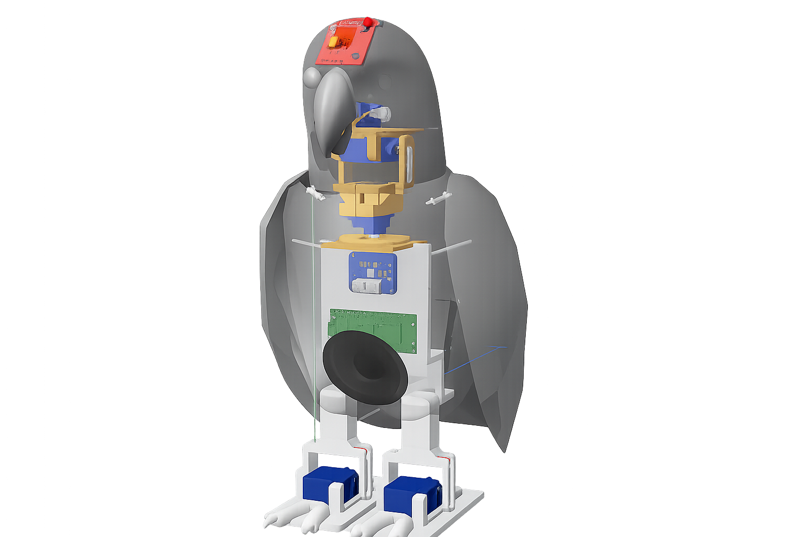

Paperino
The interactive parrot robot Paperino was inspired by my landlord's African Grey parrot Paperino when I lived in Milan, Italy seven years ago. Paperino would always call out 'Ciao! Bella' when I passed by. This little bird was depressed because of its extremely high emotional needs. It had plucked all the feathers off its neck and would not allow strangers to approach. The memories of living with my Italian landlord over the years made me want to replicate a mechanical Paperino.

Behavior
Based on the parrot’s personality characteristics, I extrapolated several potential actions for the robot, and chose to prioritize two of them: sound production and avoidance in response to touch.